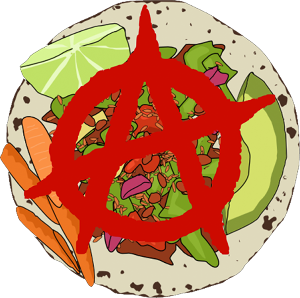
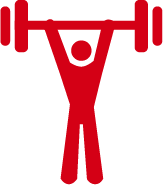
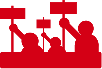

Open Source
LIKE A BOSS
or "How to effectively manage Open Source projects, make engineers better, and save the world without going insane."
These are just my observations and should not be construed as the "one true way to do anything."
Open Source
does not market itself.
Open source is fantastic, and noble, and awesome, yes. But if you believe your project has value — which you probably do, since you spent time on it — you should try to get it in the hands of as many people as possible.
― Zach Holman
I am a  "boss"
"boss"
From what I've observed it's all about people.
Ignoring the needs of
people will most certainly lead to disaster.
People have
dreams  and aspirations.
and aspirations.
People have
fears  and stresses.
and stresses.
People make the most important choices  outside of their work.
outside of their work.
People need
 to communicate.
to communicate.
But people have
problems communicating .

What do you need to be successful?
The best communities are the ones that start as distributed open source projects.
― Mikeal Rogers

Make everyone a manager
It's often cited that GitHub doesn't have managers. In my opinion, a better way to describe the phenomenon would be to say that everyone at GitHub is a manager.
― Ryan Tomayko
People need effective
leadership with a little anarchy in the age of Github.
It is also kind of like being
a referee.
And it requires a lot of
strength of mind and character
And it involves a lot of
teaching.
It is really all about fostering communication and conversation around what you're doing. And why you're doing it.
You may even have to deal with  some protest.
But remember you have a lot of
strength of mind and character
The ability to let the things which do not matter truly slide― Tyler Durden
When you do things right, people won't be sure you've done anything at all.― God Entity (Futurama)
Special thanks to the Noun Project ― thenounproject.com